import numpy as np
import matplotlib.pyplot as plt
import seaborn as sns
import scipy.stats as stats6 Graphics
6.1 Introduction
In this chapter, we introduce two modules for graphics: matplotlib and seaborn. Matplotlib offers two primary approaches for creating figures: (i) the MATLAB-style (or pyplot) approach, and (ii) the object-oriented programming (OOP) approach. The MATLAB-style tools are contained in the pyplot (plt) interface. For plot styles and color defaults, we rely on the seaborn module.
6.2 Setting plotting styles
The theme of a figure refers to the overall appearance, including colors, fonts, and line styles. We use the seaborn module to set the theme of our figures. The are five preset seaborn themes: darkgrid, whitegrid, dark, white, and ticks. The sns.set_style function can be used to set these themes. The default theme is darkgrid. For more information, see Controlling figure aesthetics from the documentation.
# Setting seaborn style
#sns.set_style('whitegrid')
#sns.set_style('dark')
#sns.set_style('white')
#sns.set_style('ticks')
sns.set_style('darkgrid') The plt.style.available function lists all available styles in Matplotlib.
# List available styles
plt.style.available['Solarize_Light2',
'_classic_test_patch',
'_mpl-gallery',
'_mpl-gallery-nogrid',
'bmh',
'classic',
'dark_background',
'fast',
'fivethirtyeight',
'ggplot',
'grayscale',
'petroff10',
'seaborn-v0_8',
'seaborn-v0_8-bright',
'seaborn-v0_8-colorblind',
'seaborn-v0_8-dark',
'seaborn-v0_8-dark-palette',
'seaborn-v0_8-darkgrid',
'seaborn-v0_8-deep',
'seaborn-v0_8-muted',
'seaborn-v0_8-notebook',
'seaborn-v0_8-paper',
'seaborn-v0_8-pastel',
'seaborn-v0_8-poster',
'seaborn-v0_8-talk',
'seaborn-v0_8-ticks',
'seaborn-v0_8-white',
'seaborn-v0_8-whitegrid',
'tableau-colorblind10']Alternatively, we can set the darkgrid style using the plt.style function. In the following example (Figure 6.1), we first create a figure using plt.figure(figsize=(5, 5)), which sets the size of the figure area to 5x5 inches. In Matplotlib, plots are contained within a Figure. We then set the plotting style with plt.style.use('seaborn-v0_8-darkgrid') and display the plot using plt.plot().
plt.figure(figsize=(5,4)) # set figure size to 5x5 inches
plt.style.use('seaborn-v0_8-darkgrid')
plt.plot()
plt.show()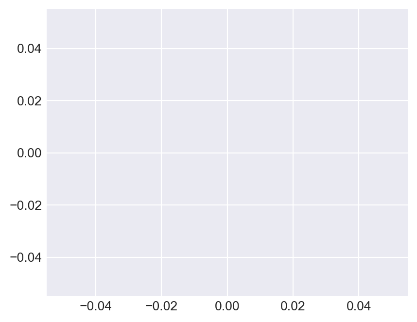
seaborn-v0_8-darkgrid style
6.3 MATLAB Style Approach
6.3.1 Line plots
In the MATLAB-style approach, we use the plt.plot function to create line plots. The plt.plot function can be used to create a wide variety of line plots, including simple line plots, line plots with markers, and line plots with different styles. The plt.plot function can also be used to add multiple lines to a single figure. The following code chunk generates the line plots shown in Figure 6.2.
# Data
np.random.seed(12345)
y =np.random.randn(20)
x = np.cumsum(np.random.rand(20))# Line Plot 1
plt.figure(figsize=(4,4))
plt.plot(y)
plt.show()
# Line Plot 2
plt.figure(figsize=(4,4))
plt.plot(y,'r-o',label='Line Plot 2')
plt.legend()
plt.xlabel('x label')
plt.title('Line Plot 2')
plt.ylabel('y label')
plt.show()
# Line Plot 3
plt.figure(figsize=(4,4))
plt.plot(x,y,'b-d',label='Line Plot 3')
plt.legend()
plt.xlabel('x label')
plt.title('Line Plot 3')
plt.ylabel('y label')
plt.show()
# Line Plot 4
plt.figure(figsize=(4,4))
plt.plot(x,y, linestyle = "-", color='steelblue' , label='Line Plot 4')
plt.legend()
plt.xlabel('x label')
plt.title('Line Plot 4')
plt.ylabel('y label')
plt.show()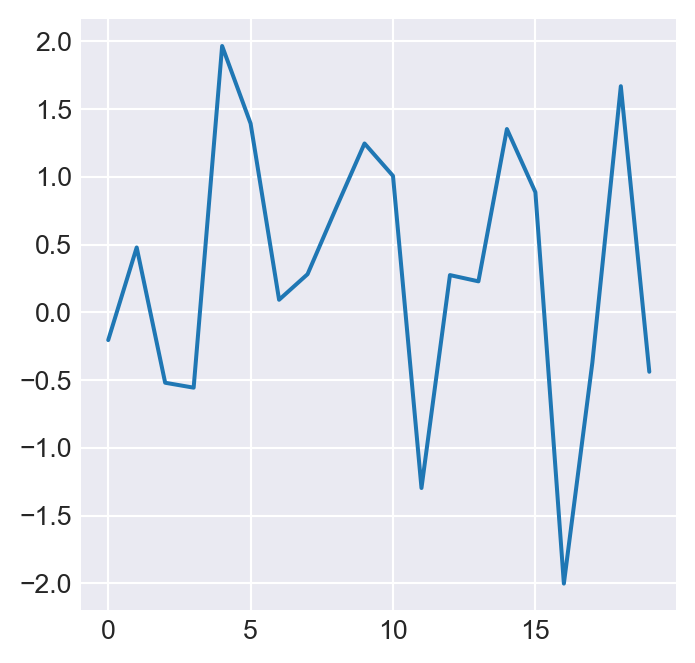
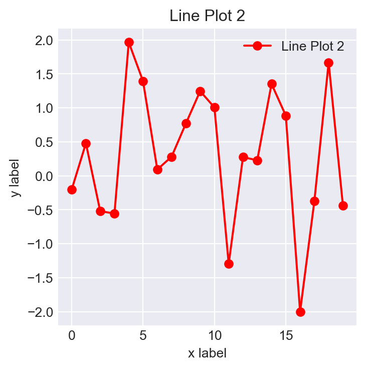
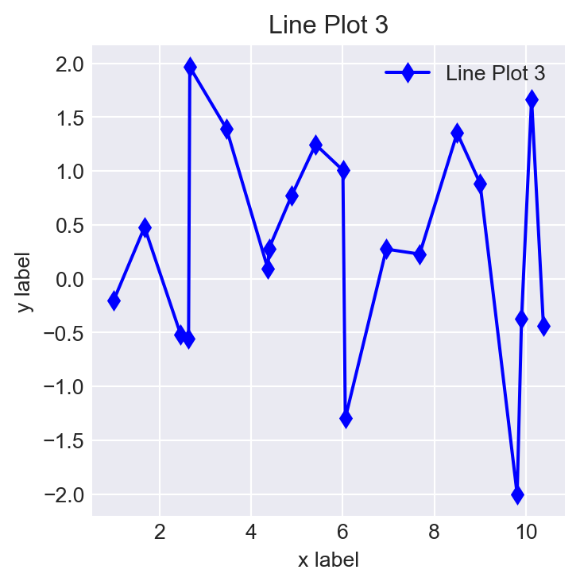
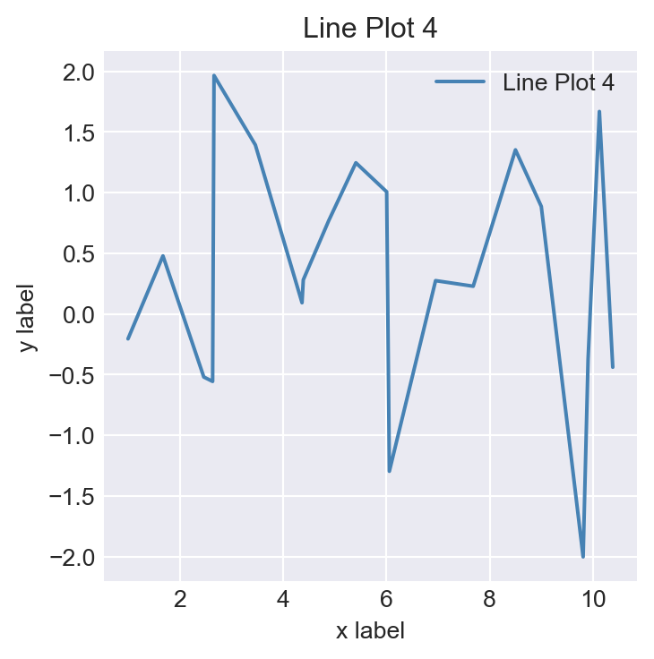
Some options used to customize the appearance of axes and lines are described in the following list:
- In Figure 6.2 (b),
r-oindicates the color red (r), a solid line (-), and a circle (o) marker. - In Figure 6.2 (c),
b-dindicates the color blue (b), a solid line (-), and a diamond (d) marker. - In Figure 6.2 (d), the line style and color are specified using
linestyle = "-"andcolor='steelblue'. - Titles are added with
plt.title(), and legends are added usingplt.legend(). The legend requires that the line includes a label. - Labels for the x- and y-axes are added using
plt.xlabel()andplt.ylabel().
In the following example, we specify the arguments of the plt.plot function explicitly.
# Specify arguments
plt.figure(figsize=(5,4))
plt.plot(x, y,
alpha = 1,
color = "#FF7F00",
label = "Line Label",
linestyle = "-",
linewidth = 2,
marker = "o",
markeredgecolor = "#000000",
markeredgewidth = 1,
markerfacecolor = "#FF7F99",
markersize = 5,
)
plt.legend()
plt.xlabel("x label")
plt.title("A line plot")
plt.ylabel("y label")
plt.show()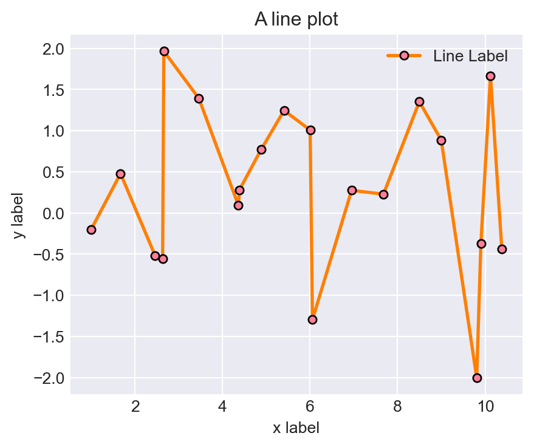
The most useful arguments of the plt.plot function are listed below:
alpha: Alpha (transparency) of the plot- default is 1 (no transparency)color: Color description for the line. It can be specified in several ways, including:- Color name (e.g.,
'red','steelblue','green') - Short color code (e.g.,
'r','g','b') - Grayscale value (e.g.,
'0.5'for gray) - Hexadecimal code (e.g.,
'#FF0000'for red) - RGB tuple (e.g.,
(1.0, 0.0, 0.0)for red) - HTML color names (e.g.,
'DarkMagenta')
- Color name (e.g.,
label: A label for the line, used in the legendlinestyle: A line style symbollinewidth: A positive integer indicating the width of the linemarker: A marker shape symbol or charactermarkeredgecolor: Color of the edge (a line) around the markermarkeredgewidth: Width of the edge (a line) around the markermarkerfacecolor: Face color of the markermarkersize: A positive integer indicating the size of the marker
Some commonly used options for color, linestyle and marker are shown in Table 6.1. For more information, see Colors, Linestyles and Marker reference from the documentation.
| color | linestyle | marker |
|---|---|---|
blue: b |
Solid: - |
Point: . |
green: g |
dashed: -- |
pixel: , |
red: r |
dashdot: -. |
circle: o |
cyan: c |
dotted: : |
square: s |
magenta: m |
diamond: D |
|
yellow: y |
thin diamond: d |
|
black: k |
cross: x |
|
white: w |
plus: + |
|
star: * |
||
| pentagon: p | ||
triangles: ^,v,<,> |
The following code chunk, which generates Figure 6.4, shows alternative ways to specify color.
# Alternative way to specify color
x = np.linspace(0, 2, 500)
plt.figure(figsize=(5,4))
plt.plot(x, np.exp(x + 0.2), color='steelblue') # specify color by name
plt.plot(x, np.exp(x - 0.1), color='g') # short color code (rgbcmyk)
plt.plot(x, np.exp(x - 0.4), color='0.2') # Grayscale between 0 and 1
plt.plot(x, np.exp(x - 0.6), color='#04fa25') # Hex code (RRGGBB from 00 to FF)
plt.plot(x, np.exp(x - 0.8), color=(1.0,0.2,0.3)) # RGB tuple, values 0 and 1
plt.plot(x, np.exp(x - 1), color='DarkMagenta'); # all HTML color names supported
plt.xlabel('x')
plt.ylabel('Exponential function')
plt.show()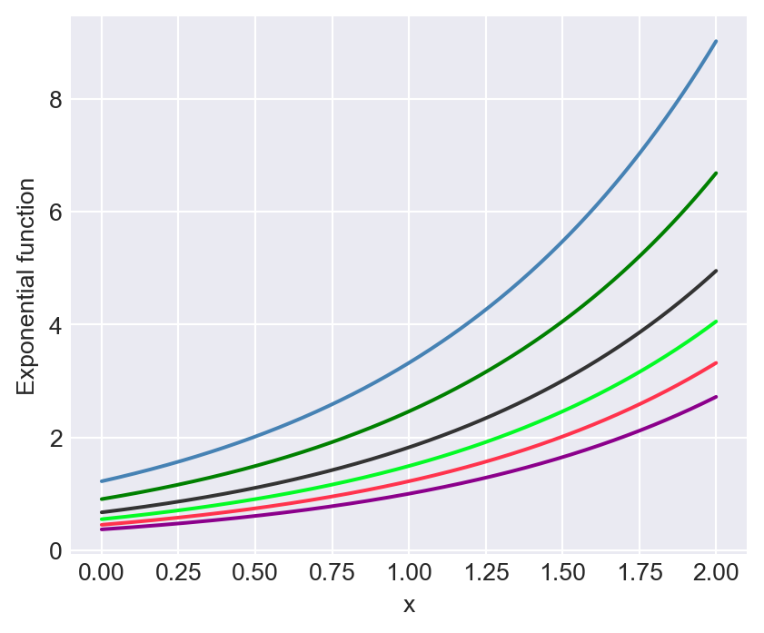
color options
In Figure 6.4, we have a single figure with multiple line plots. Thus, to add multiple lines to a single figure, we need to call the plt.plot function multiple times.
The following code chunk, which generates Figure 6.5, provide alternative ways for specifying the linestyle options.
# Alternative way to specify linestyle
x = np.linspace(0, 5, 500)
plt.figure(figsize=(5,4))
plt.plot(x, np.log(x+0.1), linestyle='solid',linewidth=2)
plt.plot(x, np.log(x + 0.6), linestyle='dashed',linewidth=2)
plt.plot(x, np.log(x + 1), linestyle='dashdot',linewidth=2)
plt.plot(x, np.log(x + 1.5), linestyle='dotted',linewidth=2)
plt.axhline(0, color="k", linestyle="-",linewidth=1, alpha=0.5)
plt.xlabel('x')
plt.ylabel('Natural logarithm')
plt.show()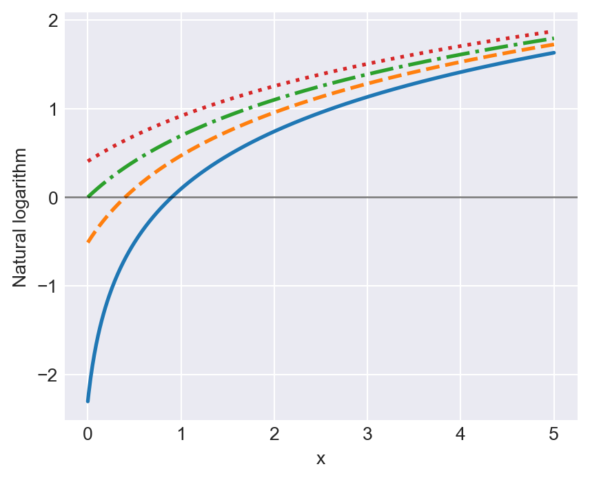
linestyle options
The plt.setp function can be used to set options for plot elements, as shown in the following example (Figure 6.6):
np.random.seed(45)
x = np.random.randn(10)
plt.figure(figsize=(5,4))
h = plt.plot(x)
plt.setp(h,
alpha=1,
linestyle="--",
linewidth=1.5,
label="Line Label",
marker="d",
color="red",
markeredgecolor="black",
markerfacecolor="green",
markersize=5
)
plt.axhline(0, color="k", linestyle="-",linewidth=1, alpha=0.5)
plt.legend()
plt.xlabel("x label")
plt.ylabel("y label")
plt.show()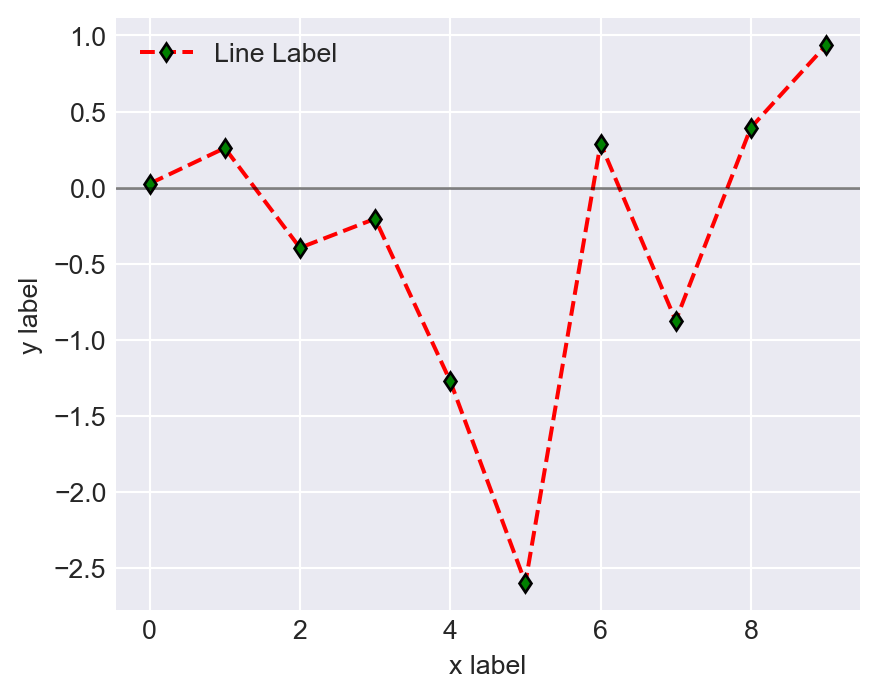
plt.setp function
The plt.getp function retrieves the list of properties for a Matplotlib object:
plt.getp(h) agg_filter = None
alpha = 1
animated = False
antialiased or aa = True
bbox = Bbox(x0=0.0, y0=-2.596878630257014, x1=9.0, y1=0.9...
children = []
clip_box = TransformedBbox( Bbox(x0=0.0, y0=0.0, x1=1.0, ...
clip_on = True
clip_path = None
color or c = red
dash_capstyle = butt
dash_joinstyle = round
data = (array([0., 1., 2., 3., 4., 5., 6., 7., 8., 9.]), ...
drawstyle or ds = default
figure = Figure(480x384)
fillstyle = full
gapcolor = None
gid = None
in_layout = True
label = Line Label
linestyle or ls = --
linewidth or lw = 1.5
marker = d
markeredgecolor or mec = black
markeredgewidth or mew = 1.0
markerfacecolor or mfc = green
markerfacecoloralt or mfcalt = none
markersize or ms = 5.0
markevery = None
mouseover = False
path = Path(array([[ 0. , 0.02637477], [ 1...
path_effects = []
picker = None
pickradius = 5
rasterized = False
sketch_params = None
snap = None
solid_capstyle = round
solid_joinstyle = round
tightbbox = Bbox(x0=73.57575757575758, y0=52.34666666666667, x...
transform = CompositeGenericTransform( TransformWrapper( ...
transformed_clip_path_and_affine = (None, None)
url = None
visible = True
window_extent = Bbox(x0=73.57575757575758, y0=52.34666666666667, x...
xdata = [0. 1. 2. 3. 4. 5.]...
xydata = [[ 0. 0.02637477] [ 1. 0.260321...
ydata = [ 0.02637477 0.2603217 -0.39514554 -0.20430091 -...
zorder = 2The plt.xlim and plt.ylim can be used to set axes limits, as illustrated in the following examples.
x = np.linspace(0, 10, 1000)
plt.figure(figsize=(5,4))
plt.plot(x, np.cos(x))
plt.axhline(0, color="k", linestyle="-",linewidth=1, alpha=0.5)
plt.xlim(-1, 12)
plt.ylim(-1.5, 1.5)
plt.xlabel('x')
plt.ylabel('Cosine function')
plt.show()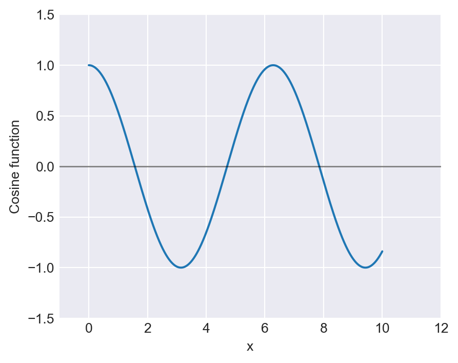
plt.xlim and plt.ylim functions
# Setting x and y limits with plt.axis()
plt.figure(figsize=(5,4))
plt.plot(x, np.cos(x))
plt.axis([-1, 12, -1.5, 1.5]) # specify [xmin,xmax,ymin,ymax]
plt.xlabel('x')
plt.ylabel('Cosine function')
plt.show()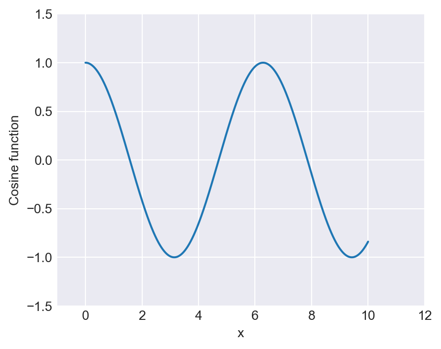
plt.axis function
6.3.2 Scatter plots
Scatter plots can be generated using the plt.scatter function or the plt.plot function with the option linestyle="". Consider the following example, which generates Figure 6.9.
# Scatter plots using plt.scatter
np.random.seed(45)
z = np.random.randn(100, 2)
z[:, 1] = 0.5 * z[:, 0] + np.sqrt(0.5) * z[:, 1]
x = z[:, 0]
y = z[:, 1]
plt.figure(figsize=(5,4))
plt.scatter(x, y, c="steelblue", marker="o", alpha=1, s = 25, label="Scatter Data")
plt.xlabel("x", fontsize=12)
plt.ylabel("y", fontsize=12)
plt.title("A scatter plot", fontsize=14)
plt.show()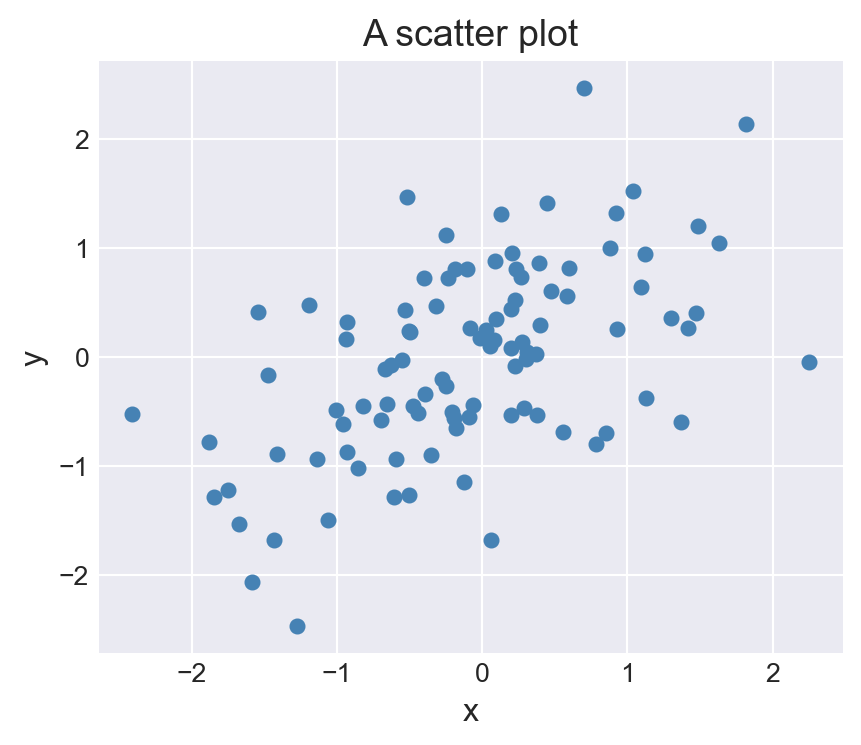
plt.scatter
Alternatively, we can use the plt.plot function with the option linestyle="" as shown in the following example.
# Scatter plot using plt.plot
plt.figure(figsize=(5,4))
plt.plot(x, y, linestyle="", c="steelblue", marker="o", ms=5,
alpha=1, label="Scatter Data")
plt.xlabel("x", fontsize=12)
plt.ylabel("y", fontsize=12)
plt.show()plt.plot
6.3.3 Bar plots
The plt.bar function is used to create bar plots. The following code chunk generates the bar plots shown in Figure 6.11 and Figure 6.12.
np.random.seed(123)
y = np.random.rand(5)
x = np.arange(5)
plt.figure(figsize=(5,4))
b=plt.bar(x,y, width = 1, color = 'steelblue',
edgecolor = 'black', linewidth = 0.5)
plt.title("Bar Plot")
plt.xlabel("x label")
plt.ylabel("y label")
plt.show()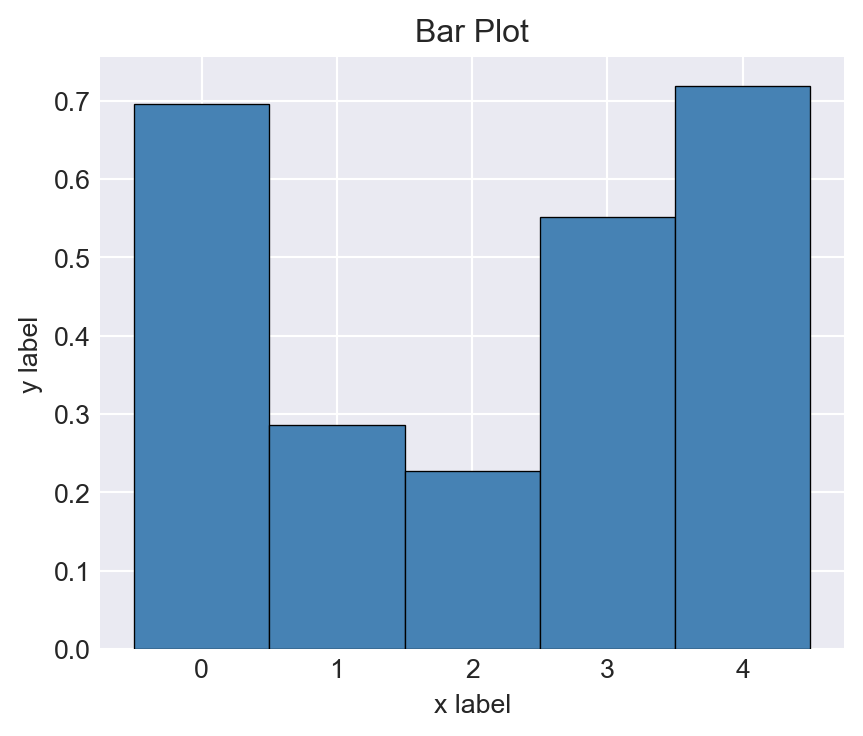
np.random.seed(45)
y = np.random.rand(5)
x = ["G1", "G2","G3","G4","G5"]
plt.figure(figsize=(5,4))
b=plt.bar(x,y, width = 1, color = 'steelblue',
edgecolor = 'black', linewidth = 0.5)
plt.title("Bar Plot")
plt.show()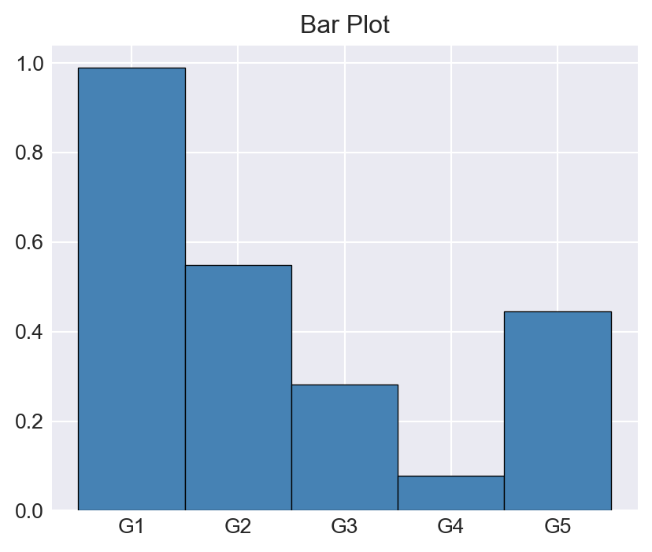
In the following example, we generate a horizontal bar plot using the plt.barh function.
# Horizontal Bar plot
np.random.seed(45)
y = np.random.rand(5)
x = ["G1", "G2","G3","G4","G5"]
plt.figure(figsize=(5,4))
b=plt.barh(x,y, height = 0.5, color = 'steelblue',
edgecolor = 'black', linewidth = 0.5)
plt.title("Horizontal Bar Plot")
plt.show()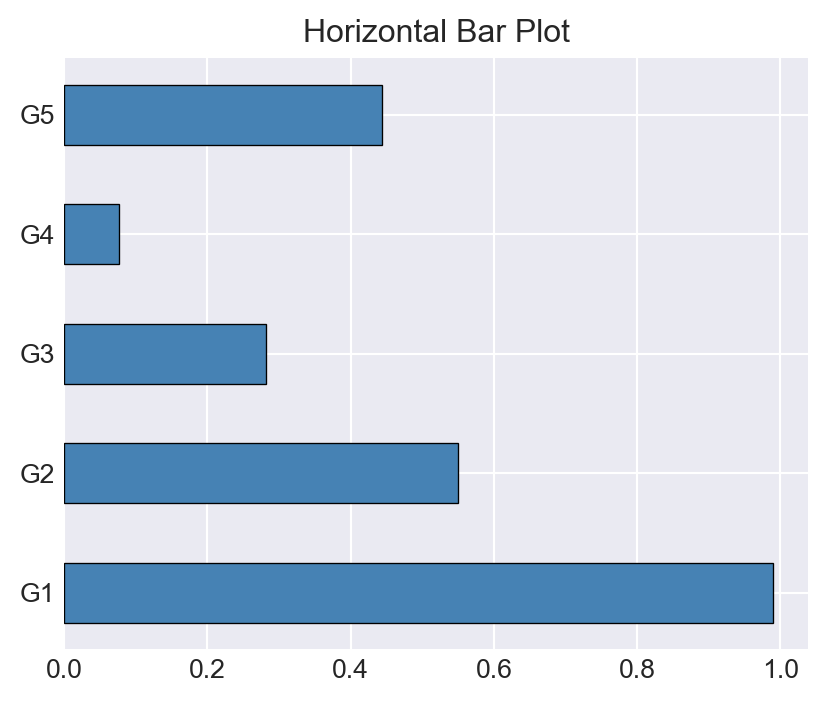
6.3.4 Pie plots
The plt.pie function is used to create pie plots. The following code chunk generates the pie plot shown in Figure 6.14.
# Pie plots
np.random.seed(45)
y = np.random.rand(5)
y = y/sum(y)
y[y<.05] = .05
labels=['One','Two','Three','Four','Five']
colors = ['#FF00FF','#FFF000','#00FF0F','#00FFF0','#00000F']
explode=np.array([0.1,0,0,0.1,0])
plt.figure(figsize=(5,5))
plt.pie(y,labels=labels,colors=colors,shadow=True,explode=explode)
plt.show()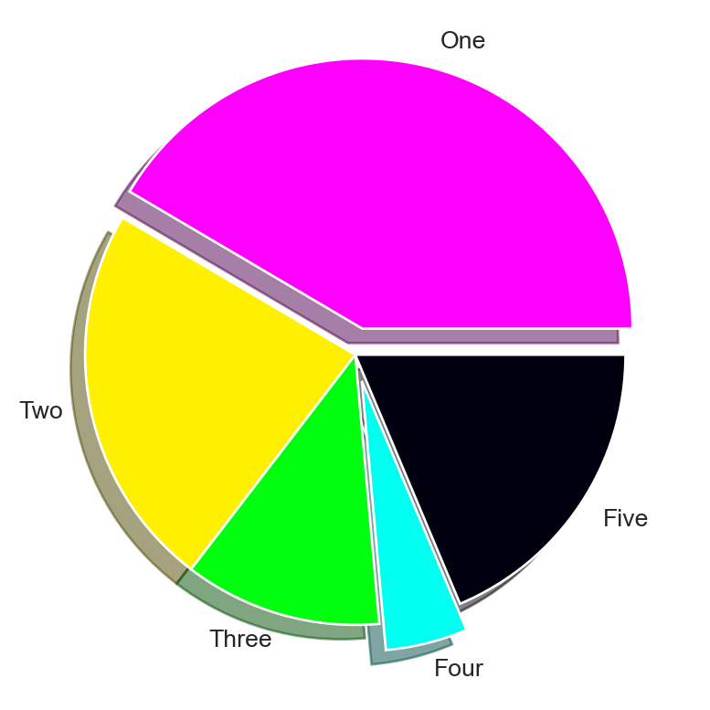
6.3.5 Histograms
We can use the plt.hist function to generate histograms. In the following example, the histtype option assumes the following options: bar, barstacked, step, and stepfilled.
# Histograms
np.random.seed(45)
x = np.random.randn(1000)
plt.figure(figsize=(5,4))
plt.hist(x, bins = 30, density=True, color='steelblue',
histtype="bar",edgecolor='black',linewidth=0.5)
plt.xlabel('x')
plt.ylabel('Density')
plt.show()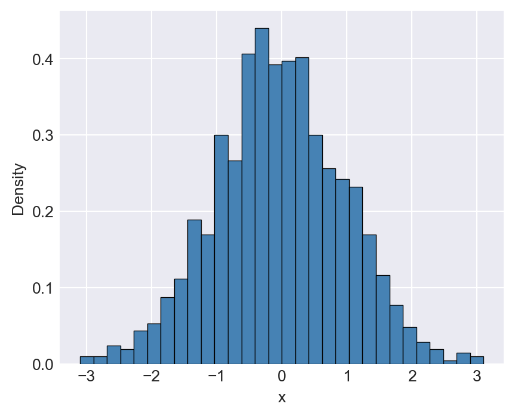
In the following example, we show how to add multiple plots to the same axes. The first plot is a histogram, and the second plot is the probability density function (PDF) of the normal distribution.
# Multiple Plots on the Same Axes
np.random.seed(45)
x=stats.norm.rvs(loc=2,scale=1.5,size=1000)
plt.figure(figsize=(5,4))
plt.hist(x, bins = 30,density=True,label = 'Empirical')
pdfx = np.linspace(x.min(),x.max(),1000)
pdfy = stats.norm.pdf(pdfx,loc=2,scale=1.5)
plt.plot(pdfx,pdfy,'r-',label = 'PDF')
plt.xlabel('x')
plt.ylabel('Density')
plt.legend()
plt.show()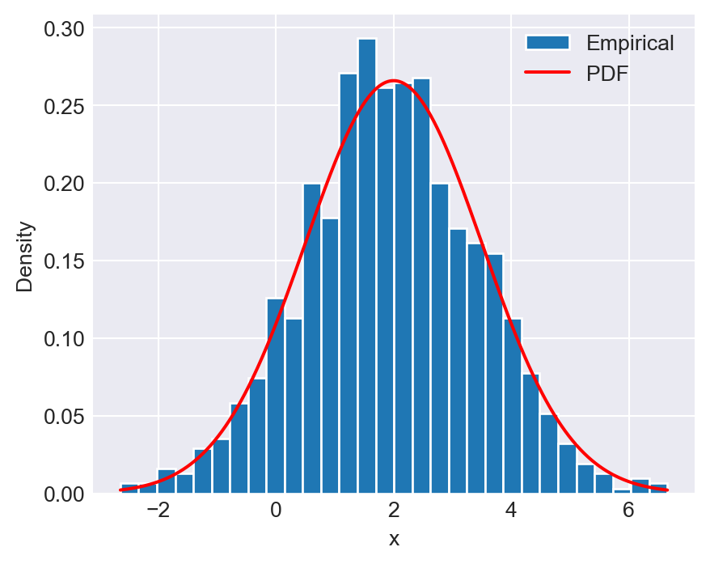
6.3.6 Kernel Density and Empirical CDF plots
The sns.kdeplot function from the seaborn module can be used to create a kernel density plot. The kernel density estimate is a non-parametric way to estimate the probability density function of a random variable. In the following example, we generate random draws from a t-distribution and a normal distribution, and then plot their kernel density estimates. The fill=True option fills the area under the curve, and the alpha option sets the transparency of the fill color.
# Kernel Density Plot
np.random.seed(45)
x = stats.t.rvs(df=3, loc=0, scale=1, size=1000)
y = np.random.randn(1000)
plt.figure(figsize=(5, 4))
sns.kdeplot(x, color='steelblue', fill=True, alpha=0.5, linewidth=1, label='t-distribution')
sns.kdeplot(y, color='orange', fill=True, alpha=0.5, linewidth=1, label='Normal distribution')
plt.xlabel('x')
plt.xlim(-6, 6)
plt.ylabel('Density')
plt.title('Kernel Density Plots')
plt.legend()
plt.tight_layout()
plt.show()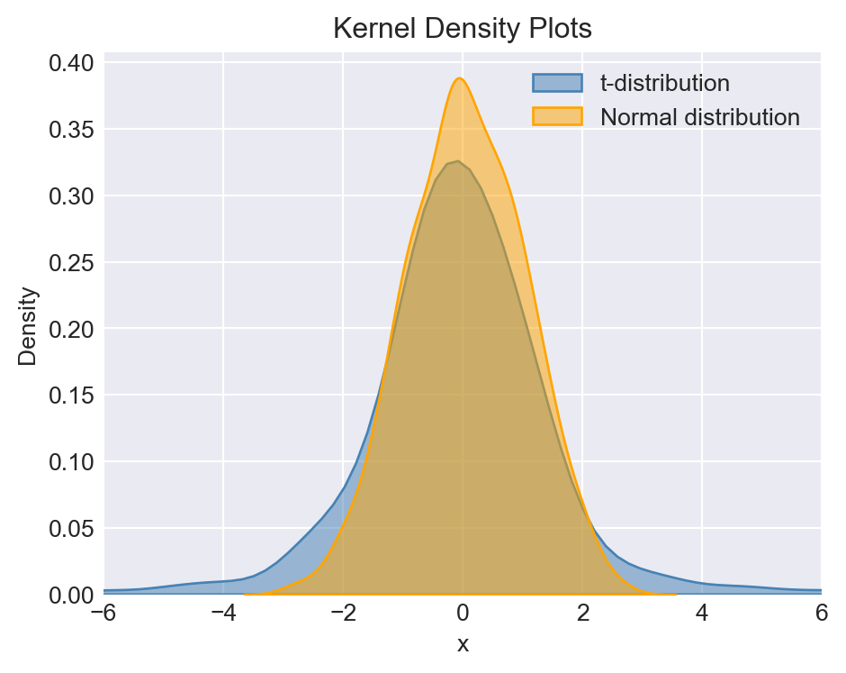
The empirical cumulative distribution function (CDF) can be plotted using the sns.ecdfplot function from the seaborn module. The empirical CDF is a step function that estimates the cumulative distribution function of a random variable based on a sample. In the following example, we generate random draws from a t-distribution and a normal distribution, and then plot their empirical CDFs.
# Empirical CDF plot
np.random.seed(45)
x = np.random.randn(1000)
y = stats.t.rvs(df=3, loc=0, scale=1, size=1000)
plt.figure(figsize=(5, 4))
sns.ecdfplot(x=x, color='steelblue', linewidth=1, label='Normal distribution')
sns.ecdfplot(x=y, color='orange', linewidth=1, label='t-distribution')
plt.xlabel('x', fontsize=12)
plt.xlim(-6, 6)
plt.ylim(0, 1.05)
plt.ylabel('Cumulative Probability', fontsize=12)
plt.title('Empirical CDF', fontsize=14)
plt.legend()
plt.tight_layout()
plt.show()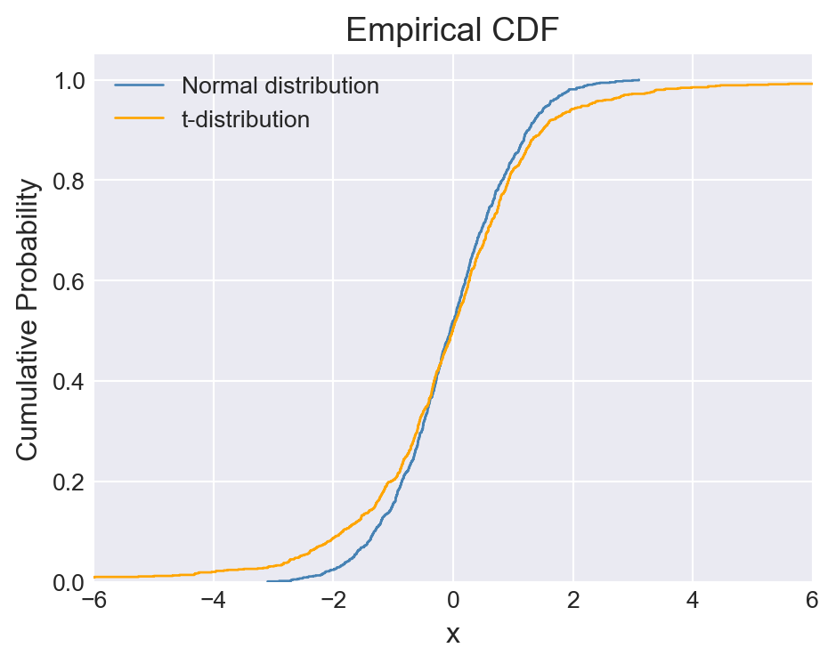
6.3.7 Multiple plots on the same figure
To add subplots to a figure, we can use the plt.subplot function. In the example below, we use plt.subplot(2, 2, p) to divide the figure area into a 2x2 grid, where p indicates the position of the subplot within the grid.
plt.figure(figsize=(7,7))
np.random.seed(45)
# Panel 1
plt.subplot(2,2,1)
y1 = np.random.randn(100)
plt.plot(y1)
plt.title('Plot 1')
# Panel 2
plt.subplot(2,2,2)
y2 = np.random.rand(5)
x2 = np.arange(5)
plt.bar(x2, y2, label='Bar Chart', color='steelblue', edgecolor='black', linewidth=0.5)
plt.legend()
plt.xlabel('x label')
plt.ylabel('y label')
plt.title('Plot 2')
# Panel 3
plt.subplot(2,2,3)
y3 = np.random.rand(5)
y3 = y3 / y3.sum()
y3[y3 < 0.05] = 0.05
labels = ['A', 'B', 'C', 'D', 'E']
colors = ['#FF00FF','#FFF000','#00FF0F','#00FFF0','#F0000F']
plt.pie(y3, labels=labels, colors=colors, autopct='%1.1f%%', startangle=90)
plt.title('Plot 3')
# Panel 4
plt.subplot(2,2,4)
z = np.random.randn(100,2)
z[:,1] = 0.5 * z[:,0] + np.sqrt(0.5) * z[:,1]
x4 = z[:,0]
y4 = z[:,1]
plt.scatter(x4, y4, s=20, color='steelblue', alpha=0.8, edgecolor='black')
plt.title('Plot 4')
plt.xlabel('x values')
plt.ylabel('y values')
# Padding
plt.subplots_adjust(hspace=0.5, wspace=0.5)
plt.tight_layout()
plt.show()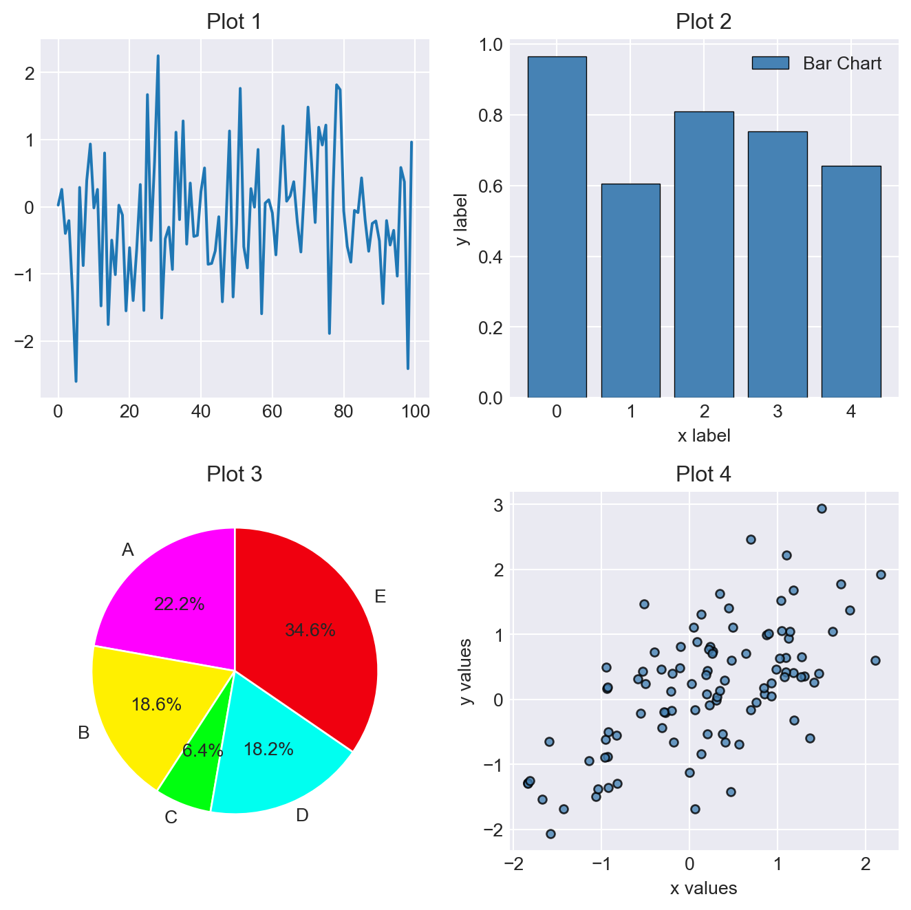
plt.subplot function
The padding between subplots can be adjusted using the plt.subplots_adjust function. In Figure 6.19, we use plt.subplots_adjust(hspace=0.5, wspace=0.5) to add horizontal and vertical spacing between subplots.
6.3.8 Saving figures
The plt.savefig function allows user to save figures in a wide variety of formats. The supported formats can be listed using the canvas.get_supported_filetypes method of the figure object, as shown below:
# The supported file types
fig = plt.figure()
fig.canvas.get_supported_filetypes(){'eps': 'Encapsulated Postscript',
'jpg': 'Joint Photographic Experts Group',
'jpeg': 'Joint Photographic Experts Group',
'pdf': 'Portable Document Format',
'pgf': 'PGF code for LaTeX',
'png': 'Portable Network Graphics',
'ps': 'Postscript',
'raw': 'Raw RGBA bitmap',
'rgba': 'Raw RGBA bitmap',
'svg': 'Scalable Vector Graphics',
'svgz': 'Scalable Vector Graphics',
'tif': 'Tagged Image File Format',
'tiff': 'Tagged Image File Format',
'webp': 'WebP Image Format'}<Figure size 672x480 with 0 Axes>In the following example, we show how to save a figure in PDF, PNG, and SVG formats. The dpi option can be used to specify the resolution of the image in dots per inch (DPI). A higher DPI value results in a higher resolution image. The default DPI value is 100.
# Exporting plots
np.random.seed(45)
plt.figure(figsize=(5, 4))
plt.plot(np.random.randn(10,2))
# plt.savefig('figures/Myfigure.pdf') # PDF export
# plt.savefig('figures/Myfigure.png') # PNG export
# plt.savefig('figures/Myfigure.svg') # Scalable Vector Graphics export
# plt.savefig('figures/Myfigure2.png', dpi = 600) # High resolution PNG export
plt.show()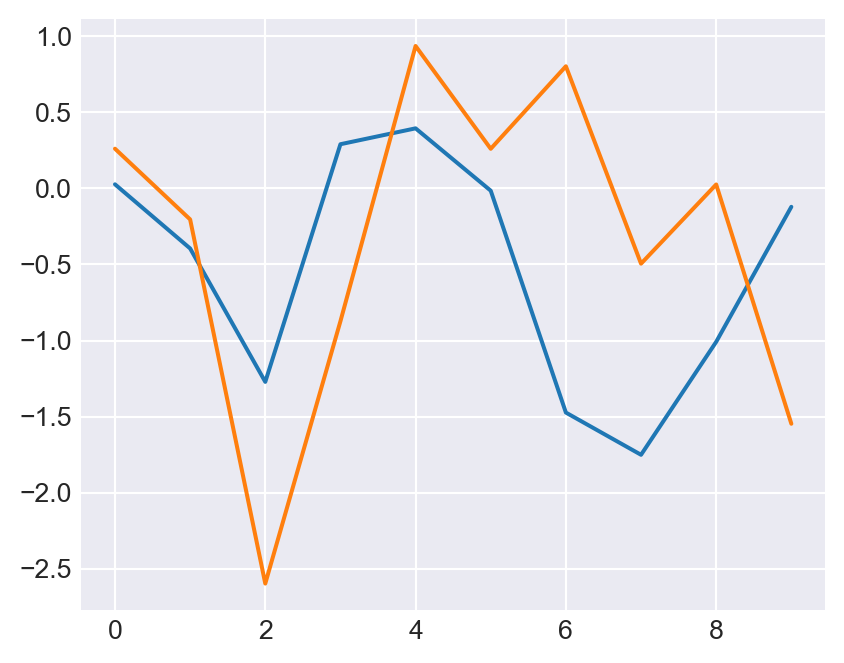
6.4 OOP Approach
The object-oriented interface in Matplotlib offers greater control over figures. In this approach, plotting functions are methods associated with explicit Figure and Axes objects. To create a plot, we begin by initializing a Figure object and an Axes object. The Figure object, referred to as fig, can be created as follows:
# Create fig object
fig = plt.figure(figsize=(5, 4))
type(fig)matplotlib.figure.Figure<Figure size 480x384 with 0 Axes>The fig object (an instance of the plt.figure.Figure class) serves as a container that holds all components, including axes, graphics, text, and labels. The Axes object, referred to as ax, can be created as follows:
# Create ax object
fig = plt.figure(figsize=(5, 4))
ax = plt.axes()
type(ax)matplotlib.axes._axes.Axes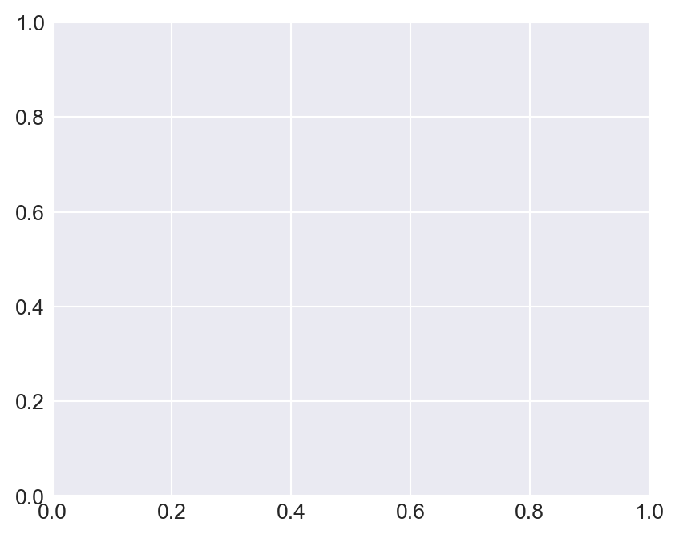
The ax (an instance of the plt.axes._axes.Axes class) object represents the box that contains the plot elements making up the visualization.
6.4.1 Line plots
In the OOP approach, we can create line plots using the ax.plot function. The ax.plot function is similar to the plt.plot function, but it is called on the ax object instead of the plt module. In the following example, we generate a line plot of the sine function using the ax.plot function. The ax.axhline function is used to add a horizontal line at \(y=0\).
fig = plt.figure(figsize=(5, 3))
ax = plt.axes()
x = np.linspace(0, 10, 1000)
ax.plot(x,np.sin(x),color='r')
# Add a horizontal line at y=0
ax.axhline(0, color='k', linestyle='-', linewidth=1, alpha=0.5)
plt.show()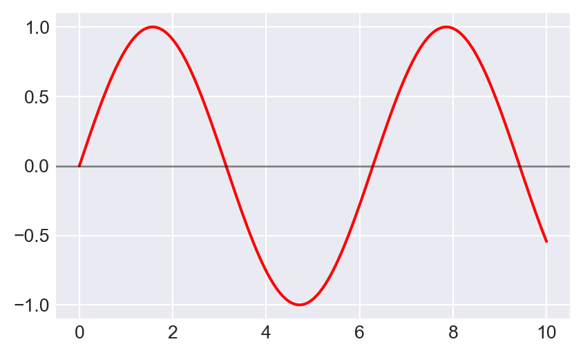
ax.plot function
Note that in Figure 6.21, the ax.plot function serves the same purpose as the plt.plot function. While most plt functions translate directly to ax methods (such as plt.plot \(\rightarrow\) ax.plot, and plt.legend \(\rightarrow\) ax.legend), this is not the case for all commands. Below, we give some commonly used translations.
plt.plot()\(\rightarrow\)ax.plot()plt.legend()\(\rightarrow\)ax.legend()plt.xlabel()\(\rightarrow\)ax.set_xlabel()plt.ylabel()\(\rightarrow\)ax.set_ylabel()plt.xlim()\(\rightarrow\)ax.set_xlim()plt.ylim()\(\rightarrow\)ax.set_ylim()plt.title()\(\rightarrow\)ax.set_titleplt.subplot()\(\rightarrow\)ax.fig.add_subplot()plt.hline()\(\rightarrow\)ax.axhline()plt.vline()\(\rightarrow\)ax.axvline()plt.text()\(\rightarrow\)ax.text()plt.annotate()\(\rightarrow\)ax.annotate()plt.grid()\(\rightarrow\)ax.grid()plt.subplots()\(\rightarrow\)fig, ax = plt.subplots()plt.show()\(\rightarrow\)plt.show()(remains unchanged)plt.savefig()\(\rightarrow\)fig.savefig()
In the following example, we generate a line plot of the sine function using the ax.plot function. The ax.set_title, ax.set_xlabel, and ax.set_ylabel functions are used to set the title and labels of the axes. The ax.set_xlim and ax.set_ylim functions are used to set the limits of the x- and y-axes, respectively. Finally, we add a legend using the ax.legend function.
x = np.linspace(0, 10, 1000)
fig = plt.figure(figsize=(5, 3))
ax = plt.axes()
ax.plot(x, np.sin(x), color='steelblue', label='sin(x)')
ax.axhline(0, color='k', linestyle='-', linewidth=1, alpha=0.5)
ax.set_title('The sine function')
ax.set_xlabel('x')
ax.set_ylabel('sin(x)')
ax.set_xlim(0,10)
ax.set_ylim(-2,2)
ax.legend()
plt.show()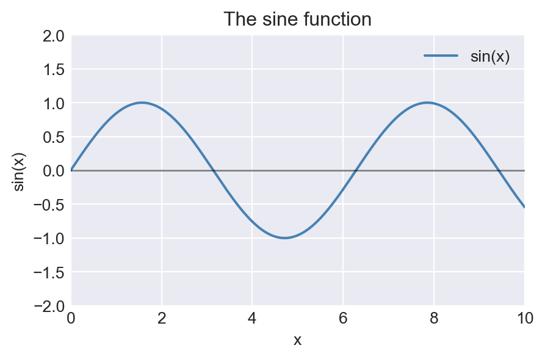
ax.plot function
In the OOP approach, rather than calling ax methods individually, it is often more convenient to use the ax.set() function as shown in the next examples. In this example r'$\sin(x)$' and r'$\cos(x)$' are used to render the sine and cosine functions in LaTeX format. The r before the string indicates that it is a raw string, which allows us to use LaTeX commands without escaping them.
x = np.linspace(0, 10, 1000)
fig = plt.figure(figsize=(5, 3))
ax = plt.axes()
ax.plot(x, np.sin(x), color='steelblue', label=r'$\sin(x)$', linewidth=1)
ax.plot(x, np.cos(x), color='orange', label=r'$\cos(x)$', linewidth=1)
ax.axhline(0, color='k', linestyle='-', linewidth=1, alpha=0.5)
ax.set(
xlim=(0, 10),
ylim=(-1.2, 1.2),
xlabel='x',
ylabel=r"$\sin(x)$ and $\cos(x)$",
title="Sine and cosine functions"
)
ax.legend(loc='upper right', frameon=False)
fig.tight_layout()
plt.show()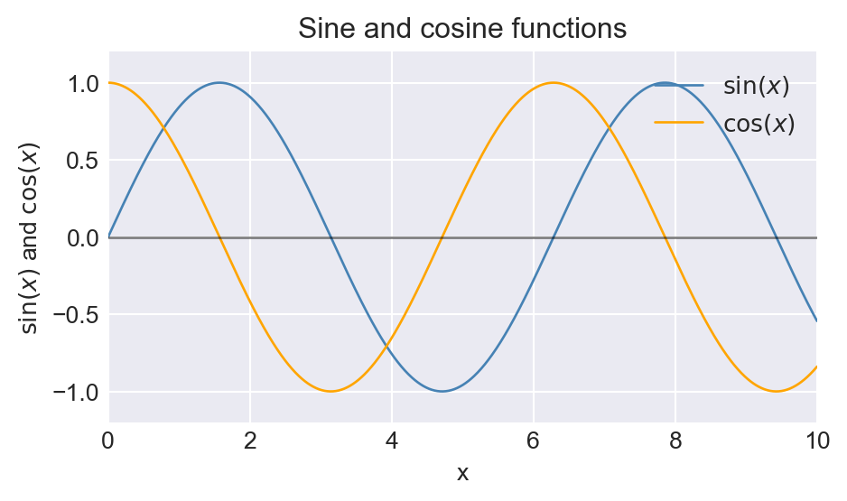
ax.set function
In the above examples, we create the fig and ax objects separately using fig = plt.figure() and ax = plt.axes(). Alternatively, we can generate both objects with a single command by using the plt.subplots function. Consider the following example:
# Improved version: clearer labels, LaTeX formatting, grid, and tight layout
x = np.linspace(0, 10, 1000)
fig, ax = plt.subplots(figsize=(5, 3))
ax.plot(x, np.sin(x), label=r'$\sin(x)$', color='steelblue', linewidth=1)
ax.plot(x, np.cos(x), label=r'$\cos(x)$', color='orange', linewidth=1)
ax.axhline(0, color='k', linestyle='-', linewidth=1, alpha=0.5)
ax.set(
xlim=(0, 10),
ylim=(-1.2, 1.2),
xlabel='x',
ylabel='Value',
title='Sine and Cosine Functions'
)
ax.legend(loc='upper right', frameon=True)
fig.tight_layout()
plt.show()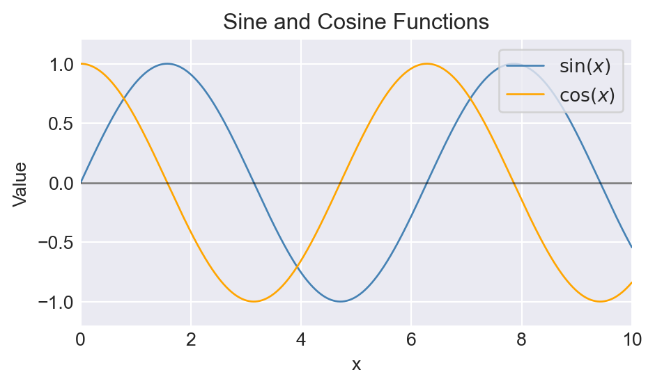
plt.subplots function
6.4.2 Scatter plots
Scatter plots can be generated using the ax.scatter function or the ax.plot function with the option linestyle="". The following example generates a scatter plot using the ax.scatter function.
# Scatter plot using ax.scatter
np.random.seed(45)
fig = plt.figure(figsize=(5, 4))
ax = plt.axes()
z =np.random.randn(100,2)
z[:,1] = 0.5*z[:,0] + np.sqrt(0.5)*z[:,1]
x=z[:,0]
y=z[:,1]
ax.scatter(x,y,color='steelblue', s=25)
ax.set_xlabel('x')
ax.set_ylabel('y')
plt.show()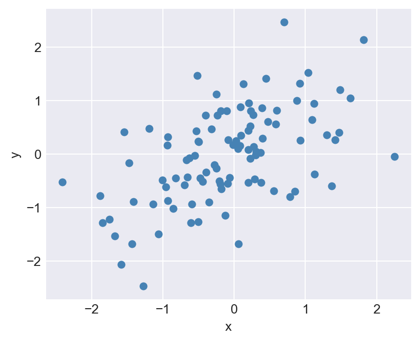
ax.scatter
In the following example, we generate a scatter plot using the ax.plot function with the option linestyle="".
# Scatter plot using ax.plot
fig, ax = plt.subplots(figsize=(5, 4))
ax.plot(x, y, linestyle='', marker='o', ms=5, color='steelblue', alpha=0.8, label="Data points")
ax.set_xlabel('x', fontsize=12)
ax.set_ylabel('y', fontsize=12)
# ax.set_title('Scatter plot using ax.plot', fontsize=14)
# ax.legend()
ax.grid(True, linestyle='--', alpha=0.5)
plt.tight_layout()
plt.show()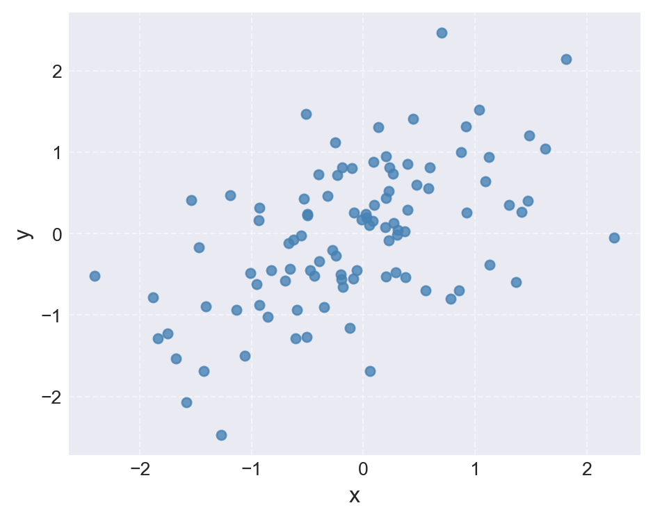
ax.plot
6.4.3 Bar plots
Bar plots can be generated using the ax.bar function for vertical bars or the ax.barh function for horizontal bars.
# Bar plot using ax.bar
np.random.seed(45)
y = np.random.rand(5)
x = np.arange(5)
fig, ax = plt.subplots(figsize=(5, 4))
ax.bar(x,y, width = 1, color = 'steelblue',
edgecolor = '#000000', linewidth = 0.5, alpha = 0.8)
ax.set_xlabel('x')
ax.set_ylabel('y')
plt.show()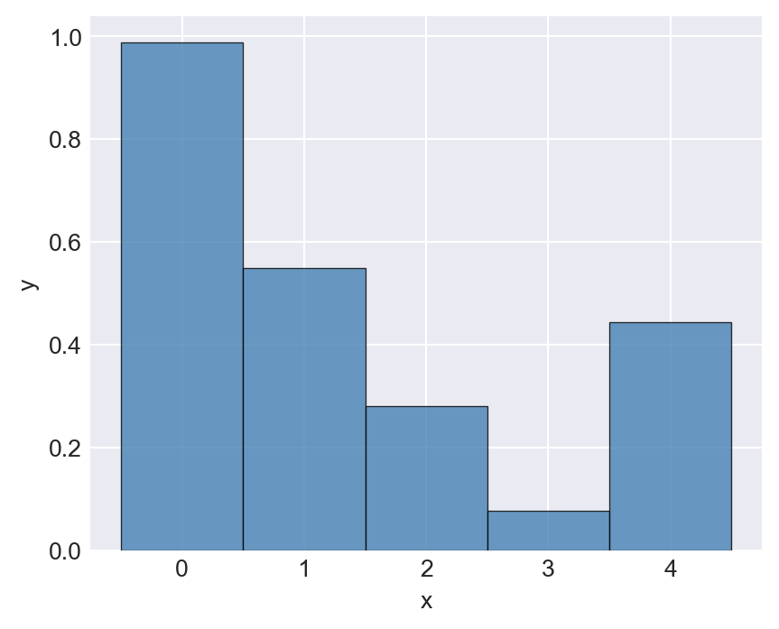
ax.bar
In the following example, we generate a horizontal bar plot using the ax.barh function.
# Horizontal Bar plot using ax.barh
np.random.seed(45)
y = np.random.rand(5)
x = ["G1", "G2", "G3", "G4", "G5"]
fig, ax = plt.subplots(figsize=(5, 4))
ax.barh(x, y, height=0.5, color='steelblue',
edgecolor='#000000', linewidth=0.5, alpha=0.8)
# ax.set_title('Horizontal Bar Plot')
ax.set_xlabel('y')
ax.set_ylabel('Groups')
plt.show()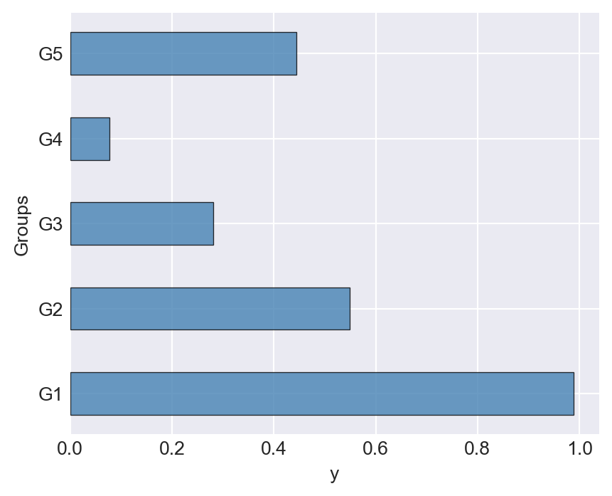
ax.barh
6.4.4 Pie plot
Pie plots can be generated using the ax.pie function. The explode option can be used to separate the slices of the pie chart, and the autopct option can be used to display the percentage of each slice.
# Pie plot
np.random.seed(45)
y = np.random.rand(5)
y = y/sum(y)
y[y<.05] = .05
labels=['Group 1','Group 2','Group 3','Group 4','Group 5']
colors = ['#FF0000','#FFFF00','#00FF00','#00FFFF','#0000FF']
fig, ax = plt.subplots(figsize=(5, 5))
ax.pie(y,labels=labels,colors=colors,
shadow=True, explode=np.array([0.1,0,0,0.1,0]), autopct='%1.1f%%', startangle=90)
plt.show()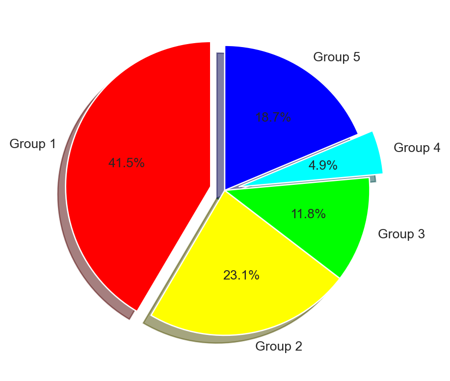
6.4.5 Histograms
The ax.hist function is used to create a histogram. In the following example, the density option takes a boolean value that determines whether the histogram is normalized to form a probability density function (PDF).
# First Histogram
np.random.seed(45)
x = np.random.randn(1000)
fig, ax = plt.subplots(figsize=(5, 4))
ax.hist(x, bins=30, density=False, color='steelblue', edgecolor='black', alpha=0.8)
ax.set_title('Histogram')
ax.set_xlabel('x')
ax.set_ylabel('Frequency')
plt.tight_layout()
plt.show()
# Second Histogram
x = np.random.randn(1000)
fig, ax = plt.subplots(figsize=(5, 4))
ax.hist(x, bins=30, density=True, color='#FF7F00', edgecolor='black', alpha=0.8)
ax.set_title('Normalized Histogram')
ax.set_xlabel('x')
ax.set_ylabel('Density')
plt.tight_layout()
plt.show()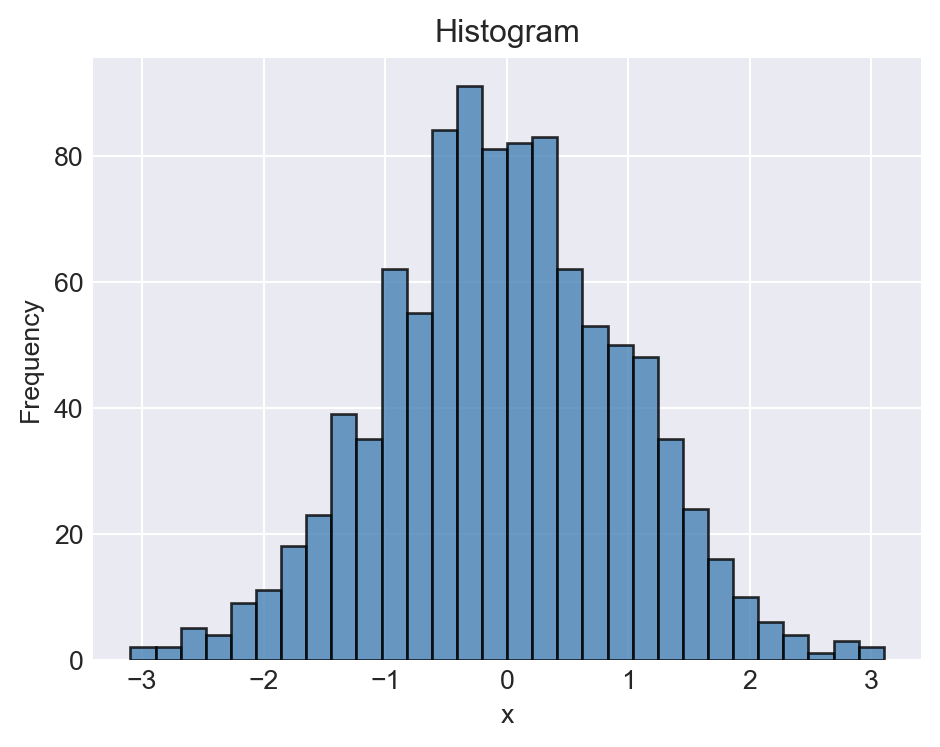
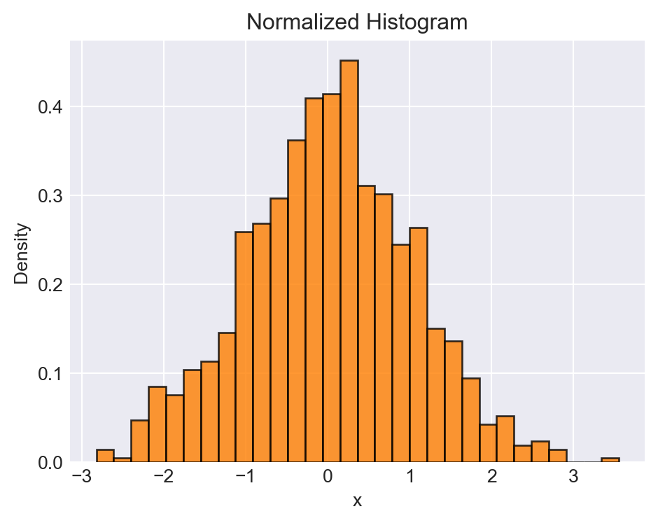
In the following example, we show how to add multiple plots to the same axes. The first plot is a histogram, and the second plot is the probability density function (PDF) of the normal distribution.
# First Histogram with PDF overlay (OOP style, improved)
np.random.seed(45)
x = np.random.randn(500)
fig, ax = plt.subplots(figsize=(5, 4))
# Plot histogram
ax.hist(x, bins=30, label='Empirical', density=True, color='steelblue', edgecolor='black', alpha=0.7)
# Overlay normal PDF
pdfx = np.linspace(x.min(), x.max(), 500)
pdfy = stats.norm.pdf(pdfx)
ax.plot(pdfx, pdfy, 'k-', label='Normal PDF', linewidth=1)
# Labels and legend
ax.set_xlabel('x')
ax.set_ylabel('Density')
ax.set_title('Histogram with Normal PDF')
ax.legend()
fig.tight_layout()
plt.show()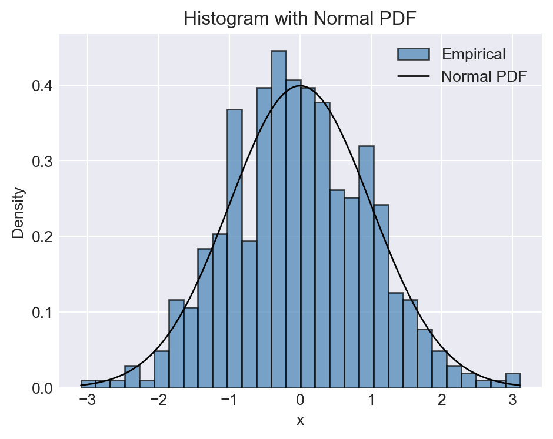
Multiple plots on the same axes
6.4.6 Multiple plots on the same figure
In the following example, we first create a Figure of size 8x7 inches using fig=plt.figure(figsize=(8,7)). We then create the 2x2 grid of subplots and the Axes objects with fig.add_subplot(2,2,p), where p indicates the position of the subplot within the grid.
np.random.seed(45)
fig = plt.figure(figsize=(7, 7))
# Panel 1: Line plot
ax1 = fig.add_subplot(2, 2, 1)
y1 = np.random.randn(100)
ax1.plot(y1, color='steelblue', linewidth=1)
ax1.set_title('Line Plot')
ax1.set_xlabel('Index')
ax1.set_ylabel('Value')
ax1.grid(True, linestyle='--', alpha=0.5)
# Panel 2: Bar plot
ax2 = fig.add_subplot(2, 2, 2)
y2 = np.random.rand(5)
x2 = np.arange(5)
ax2.bar(x2, y2, label='Bar Chart', color='orange', edgecolor='black', linewidth=0.7, alpha=0.8)
ax2.legend()
ax2.set_xlabel('x label')
ax2.set_ylabel('y label')
ax2.set_title('Bar Plot')
ax2.grid(axis='y', linestyle=':', alpha=0.5)
# Panel 3: Pie plot
ax3 = fig.add_subplot(2, 2, 3)
y3 = np.random.rand(5)
y3 = y3 / y3.sum()
y3[y3 < .05] = .05
labels = ['A', 'B', 'C', 'D', 'E']
colors = ['#FF00FF', '#FFF000', '#00FF0F', '#00FFF0', '#F0000F']
ax3.pie(y3, labels=labels, colors=colors, autopct='%1.1f%%', startangle=90)
ax3.set_title('Pie Plot')
# Panel 4: Scatter plot
ax4 = fig.add_subplot(2, 2, 4)
z = np.random.randn(100, 2)
z[:, 1] = 0.5 * z[:, 0] + np.sqrt(0.5) * z[:, 1]
x4 = z[:, 0]
y4 = z[:, 1]
ax4.scatter(x4, y4, s=25, color='steelblue', alpha=0.8, edgecolor='black')
ax4.set_title('Scatter Plot')
ax4.set_xlabel('x values')
ax4.set_ylabel('y values')
ax4.grid(True, linestyle='--', alpha=0.5)
fig.subplots_adjust(hspace=0.4, wspace=0.3)
fig.tight_layout()
plt.show()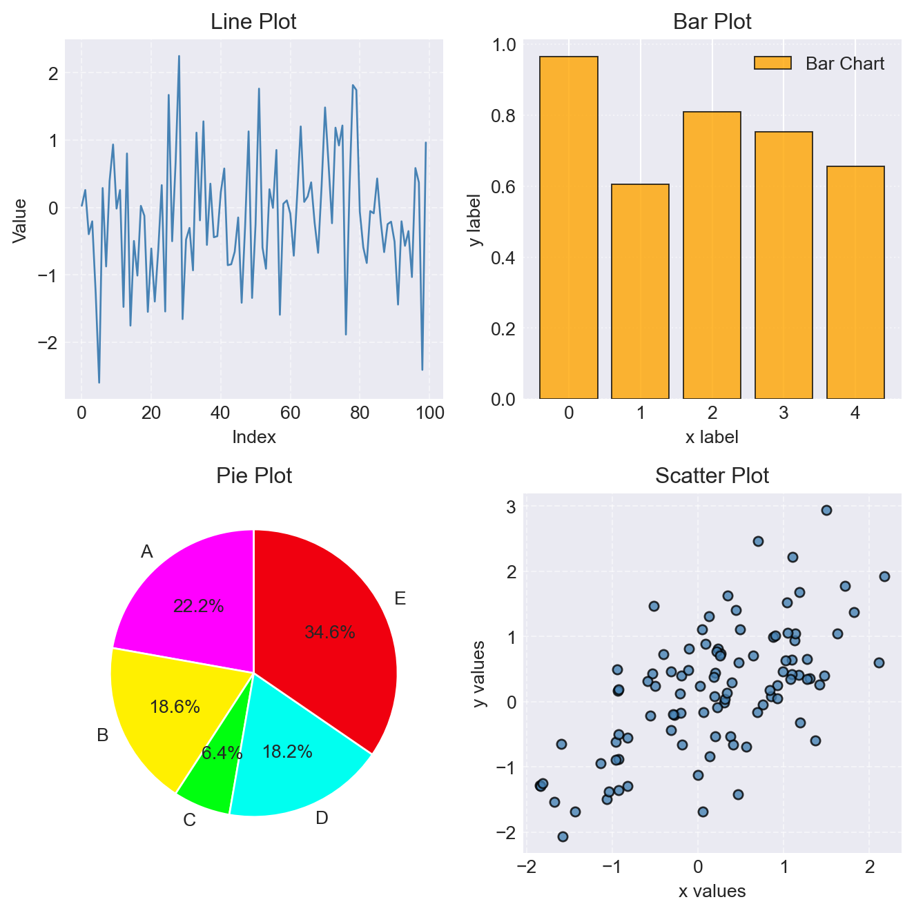
fig.add_subplot function
Alternatively, we can create the 2x2 grid of subplots and the Axes objects using fig, ax = plt.subplots(2,2,figsize=(8,7)). The positions of subplots are specified through ax[i,j].
np.random.seed(45)
fig, ax = plt.subplots(2, 2, figsize=(7, 7))
# Panel 1: Line plot
y1 = np.random.randn(100)
ax[0, 0].plot(y1, color='steelblue', linewidth=1)
ax[0, 0].set_title('Line Plot')
ax[0, 0].set_xlabel('Index')
ax[0, 0].set_ylabel('Value')
ax[0, 0].grid(True, linestyle='--', alpha=0.5)
# Panel 2: Bar plot
y2 = np.random.rand(5)
x2 = np.arange(5)
ax[0, 1].bar(x2, y2, label='Bar Plot', color='orange', edgecolor='black', linewidth=0.7, alpha=0.8)
ax[0, 1].legend()
ax[0, 1].set_xlabel('x label')
ax[0, 1].set_ylabel('y label')
ax[0, 1].set_title('Bar Plot')
ax[0, 1].grid(axis='y', linestyle=':', alpha=0.5)
# Panel 3: Pie plot
y3 = np.random.rand(5)
y3 = y3 / y3.sum()
y3[y3 < 0.05] = 0.05
labels = ['A', 'B', 'C', 'D', 'E']
colors = ['#FF00FF', '#FFF000', '#00FF0F', '#00FFF0', '#F0000F']
ax[1, 0].pie(y3, labels=labels, colors=colors, autopct='%1.1f%%', startangle=90)
ax[1, 0].set_title('Pie Plot')
# Panel 4: Scatter plot
z = np.random.randn(100, 2)
z[:, 1] = 0.5 * z[:, 0] + np.sqrt(0.5) * z[:, 1]
x4 = z[:, 0]
y4 = z[:, 1]
ax[1, 1].scatter(x4, y4, s=25, color='steelblue', alpha=0.8, edgecolor='black')
ax[1, 1].set_title('Scatter Plot')
ax[1, 1].set_xlabel('x values')
ax[1, 1].set_ylabel('y values')
ax[1, 1].grid(True, linestyle='--', alpha=0.5)
fig.subplots_adjust(hspace=0.4, wspace=0.3)
fig.tight_layout()
plt.show()plt.subplots function
6.5 Other Tools for Graphics
In this chapter, we covered only the most commonly used plotting methods. Matplotlib also provides functions for other types of plots, such as density plots, contour plots, and three-dimensional plots, as well as customization tools for legends, colorbars, ticks, text, and annotations. In addition to Matplotlib, the Seaborn and Pandas modules offer additional plotting methods. For further reading, we refer the reader to Sheppard (2021), McKinney (2022), and VanderPlas (2023).